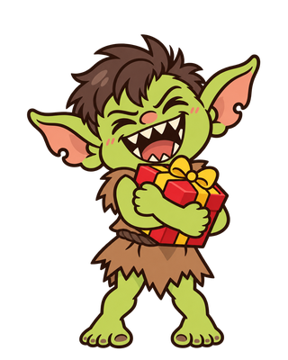
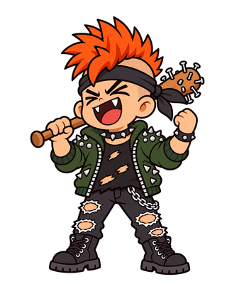

聖誕老人發禮物模擬器 · 肌肉特別版
Coal
-or-
Gift
開始發禮物
▶
⚠ 本遊戲含
大量肌肉
。偽裝成小孩的聖誕老人可能出現在任何角落,
請勿毆打
。
🏆 歷史排行榜
本機前 5 名
清除紀錄
📖 怎麼玩
乖孩子
→ 丟
禮物
;
壞孩子
→ 砸
煤炭
點擊畫面投擲;
1 / 2
、空白鍵、右鍵或按鈕切換物品
連擊越高,分身越多,還會引來
雪怪
(切煤炭狂點!)
像小孩又像老人?
別打他!會被肌肉秀擋住畫面
漏掉目標扣愛心,3 顆愛心用完就結束